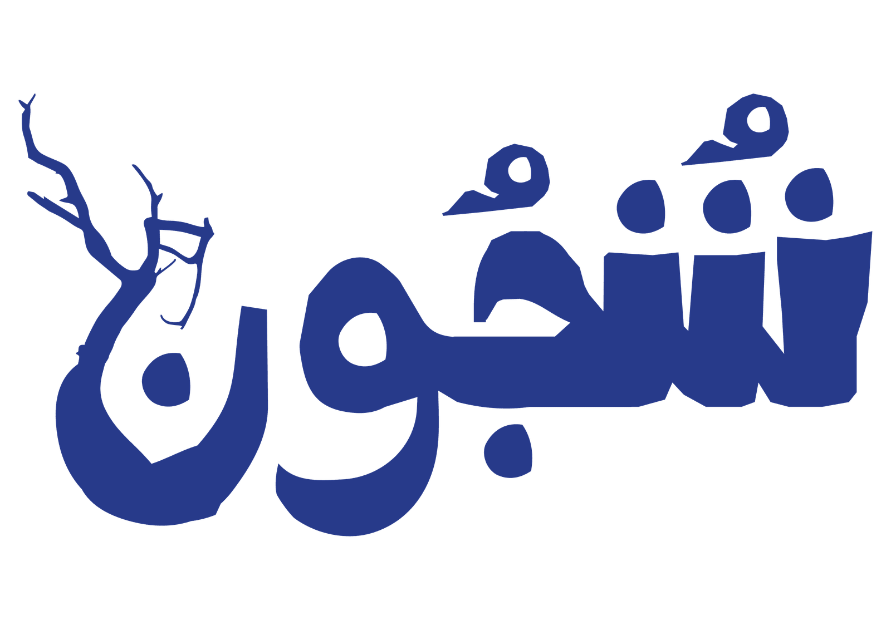

وجدنا أنفسنا في آخر عربةٍ مكتظّة من قطار خط جوبيلي. كنّا في مكانٍ ما، متّجهين إلى مكانٍ آخر ما. لم يزعجني أننا مضينا في الاتجاه الخاطئ محطةً واحدة. وحين دخل القطار المحطة الخاطئة، ودّعنا صديقنا الذي وجد الموقف مسلّياً جداً، وكذلك الغريب الذي كان بجانبنا، والذي آثر ألّا يقول شيئاً لكنه كان معنا على أي حال. عدنا إلى المحطة التي كنّا فيها قبل أن نسلك الاتجاه الخاطئ، فإذا بحشودٍ من كبار السن، لا تفسير لوجودها، تتسرّب إلى الداخل، بُعيد أن أسقط الرجل الذي بجانبنا علبة البيرة. كانت معه ثلاث علب من هاينكن، أو من بيرةٍ خضراء أخرى، تتباين مع الكيس البلاستيكي الأسود من دكّان الحيّ. أسقط علبته المفتوحة، وراح ينظّفها بلهفةٍ يائسة قبل أن يدخل الكبار. كانت علامةً لطيفة على احترامٍ ثَمِل.
كنّا نتساءل كلانا في صمت: أيّ عرضٍ هذا الذي يجذب جمهوراً بهذا العمر؟ أهو عرضٌ لـ«غروف أرمادا» مخصّصٌ حصراً لمن تجاوزوا الخمسين؟ راودتني الفكرة لثانية، ثم عدتُ إليها. كنّا نُدفع شيئاً فشيئاً إلى الخلف أكثر فأكثر، حتى صرنا ملتصقين بالباب في آخر العربة، ذاك الذي يصلها بالعربة التالية. كانت في أذن كلٍّ منّا سمّاعة، موصولة بهاتفها بسلك. وكانت أيدينا تحاكي اتصال السلك بالهاتف. كانت في مزاجٍ لتشغيل الموسيقى التي تحبّها، وهذا ما أعتزّ به، لأنها لا تختارها على ذوقي. لا أريد شيئاً سوى أن أحدّق فيها دون انقطاع، وأسمح لنفسي بأن أغيب في سحر عينيها الزرقاوين الوادعتين.
انقطع ذلك. نلتفت نحو أحد الأبواب الصغيرة بجانبنا، فإذا بامرأةٍ مسنّة قد انفصلت عن جماعتها. كانت هي الأخرى تسير في الاتجاه الخاطئ، لكن ذلك أزعجها وأربكها كثيراً. تمكّنت بطريقةٍ ما من فتح باب القطار، لكن الأبواب الزجاجية لرصيف المحطة، تلك التي لا تراها إلا على خط جوبيلي، أُغلقت في وجهها. صارت في منطقةٍ لا بالتر ولا بالفر، خارج القطار لكن ليست على الرصيف. نحن ركّاب القطار، والآخرون المنتظرون على الرصيف، اتّحدنا في ذعرٍ صامت حلّ بنا جميعاً، إذ لا بدّ أن بعضنا تخيّل الأسوأ. لا يحدث شيء؛ تُفتح الأبواب وتلتئم بجماعتها. الحياة مملّة في العادة، وهذا أمرٌ حسن.
بإمكاني أن أعود إليها، أن أعود إلى ما يبدو من الخارج لحظةً مملّة أخرى لشخصين في طريقهما. أما بالنسبة لي، فهي لا تقلّ عن أمرٍ استثنائي. إنها قوّة حياتي. إنها قوّة حياة. إنها زنبقة، وأنا واحدٌ من قلّةٍ محظوظة من النحل. أوراقها تحمل الندى الذي يحيني. ولا تطلب شيئاً في المقابل. أنظر إليها فتتعلّق عيناي بعينيها. تشيح بعينيها كل بضع لحظات بابتسامةٍ خجولة وضحكة، أما أنا فمسحور. أنظر إليها غير مصدّق، وهي لا تصدّق أن أحداً ينظر إليها هكذا.
صرنا الآن محشورين تماماً في هذه العربة. ننظر إلى العربة الأخرى فنرى مشاهد صامتة لأناس. نراقب الناس يضحكون ويتحدثون. رجلٌ وامرأة آخران، محشوران في آخر عربتهما، ينظران إلينا. نلوّح لهما فيضحكان ونضحك، ونصنع وجوهاً سخيفة كالأطفال. هكذا تصنع الهواء من حولها. يصير التنفّس أسهل، وتزفر رئتاك أصواتاً ناعمة.
منذ أن عرفتها، صار أكبر مخاوفي أن أصبح أحمق. كل ما أفعله أراقبه بنفسي تجنّباً لأن أصبح أحمق. وحده الأبله لا يحمي هذا فوق كل شيء، ووحده المغفّل يسمح بأن يضيع. أن أسيء التصرّف أمرٌ، أما التهاون فقاتلٌ صامت. فخذي منّي ما شئتِ؛ اطلبي منّي أي شيء. لا شيء أستطيع أن أمنحكِ إياه يضاهي ما تمنحينني. ومع ذلك لا تطلبين شيئاً أبداً. الملائكة لا تعرف المقايضة.
نصل إلى حيثما كنّا ذاهبين. لا أملك إلا أن أدعو بعطلٍ في القطار في المرة القادمة، بإشارةٍ حمراء، بمزيدٍ من المحطات في الاتجاه الخاطئ. أريد مزيداً من الملل معكِ. أتمنى أن ينفد الصابون فنضطرّ إلى الخروج لشرائه. تعالي معي إلى الحلّاق. سأذهب معكِ إلى طبيب الأسنان. متى عليكِ أن تجدّدي هويتكِ؟ نعم، بالطبع سآتي معكِ إلى دراي كلين. لنفعل أي شيء، ولنفعله لفترة.
